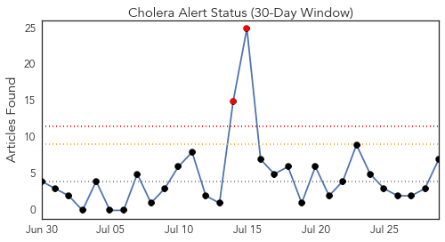
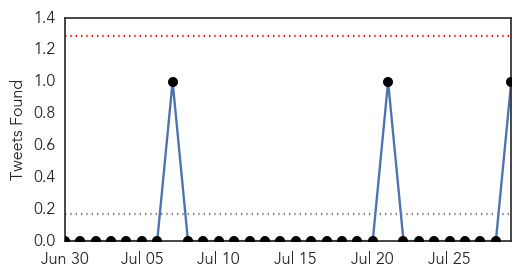
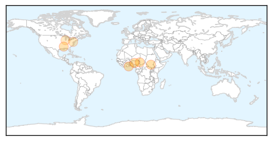
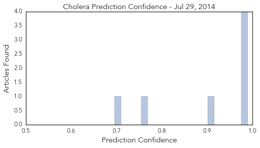

Toggle navigation
Early Warning
Daily Alerts
Cholera
Jul 29, 2014
Compare to:
-
Dengue Fever
Hemmorhagic Fever
Mold/Fungal Infection
Influenza
Meningitis
Pertussis / Whooping Cough
Middle East Respiratory Syndrome
Hepatitis
Chikungunya
Yellow Fever
Bubonic Plague
West Nile Virus
Swine Flu
Ebola
Measles
Unknown
Mumps
30 Day Trends
Web: 2
alerts
, 0
warnings
Twitter: 0
alerts
, 0
warnings
Top Articles:
0.990
Cholera: Vaccination vs. Sanitation- The Borgen Project
0.988
Cholera Kills Over 200 in Northern Cameroon
0.987
The Chosun Ilbo (English Edition): Daily News from Korea
0.977
La General Hospital inundated by cholera cases; 5 dead so far
0.914
Flesh-Eating Bacteria Vibrio Vulnificus Found In Warm Florida Water (VIDEO) : Health : Headlines & Global News
0.755
Bacteria related to Cholera found in Florida waters causes grave health concerns - Dumb Out
0.695
Ebola Virus: NCAA Suspends ASky Operations To Nigeria
Top Tweets:
0.574
RT: La General Hospital inundated by cholera cases; 5 dead so far: The La General Hospital in Accra has been force... http:…
Web/News Articles

Tweets

Article Locations

Article Confidences
